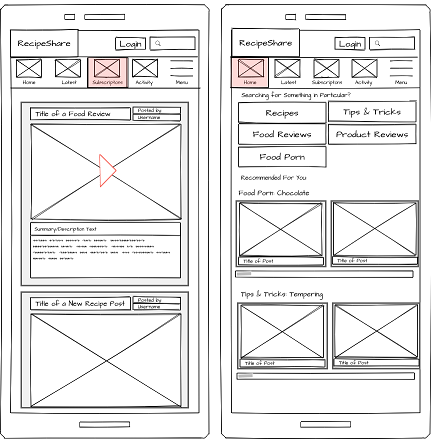

Wireframe
I created a wireframe that is much, MUCH too complicated to complete in one week. However, it does display a lot of the types of functions I want to have. In example, I want a seperate login page for the site, and tabs on the Home page, which would contain the tabs for recipies and such. The activity tab would be used for helping create the user's profile, track their activity/comments, and allow for their own posting of material should they want to post a recipe or review. I'm just going to concentrate on getting a subcription form to work for now, though.